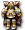

哥布林諾肯
我們伺服器實際的怪物設定（不是日版 wiki 的資料）。
能力值
| 項目 | 本伺服器 | 日版 wiki |
| 等級 | 16 | - |
| HP | 867～969 | - |
| AC | 83 | - |
| MC | 95 | - |
| AAR | 18 | - |
| SAR | 0 | - |
| STR | 21 | - |
| DEX | 14 | - |
| INT | 1 | - |
| WIS | 1 | - |
| CON | 16 | - |
| 經驗值 | 2880 | - |
| 名聲值 | 0 | - |
| 金錢 | 500 | - |
| 攻擊屬性 | 無 | - |
| 防禦屬性 | 無 | - |
出現地圖
| 地圖 | 數量 | 出現位置 |
| 斯歐米森林6 | 236 | 整張地圖 |
掉落物品
| 道具 | 基本機率 |
 強力生命之水 強力生命之水 | 5% |
 強力魔力之水 強力魔力之水 | 5% |
 世界樹的葉子 世界樹的葉子 | 5% |
 蓋姆布爾林菲德 蓋姆布爾林菲德 | 0.5% |
| 蓋姆布爾羅菲德 | 0.5% |
 [21]諾肯爺爺變身捲軸 [21]諾肯爺爺變身捲軸 | 0.5% |
 [13]參式魔法卡組材料A [13]參式魔法卡組材料A | 0.1% |
| [99]參式魔法卡組材料A | 0.1% |
| [99]貳式魔法卡組材料D | 0.1% |
| [91]斯凱洛斯變身捲軸 | 0.1% |
| [95]艾莉絲變身捲軸 | 0.1% |
 [3次]鎧甲3階段升級捲軸 [3次]鎧甲3階段升級捲軸 | 0.1% |
| 泰特拉牧師服 | 0.05% |
 泰特拉助祭之袍AG 泰特拉助祭之袍AG | 0.05% |
 泰特拉風之騎士鎧 泰特拉風之騎士鎧 | 0.05% |
 泰特拉女執事之袍 泰特拉女執事之袍 | 0.05% |
 泰特拉傳說之女服AG 泰特拉傳說之女服AG | 0.05% |
 泰特拉皇家騎士女鎧UG | 0.05% |
 免疫劑處方3 免疫劑處方3 | 0.1% |
| 鎮靜精華處方4 | 0.1% |
| WIS神器 3 階段製造法 | 0.3% |
 [銀塊]精煉法 [銀塊]精煉法 | 0.1% |
| [亞銅合金]精煉法 | 0.1% |
| [極限寶珠]製造法 | 0.1% |
| [極限之鼓]製造法 | 0.1% |
| 防禦護手製造法 | 0.3% |
| 重型防禦護手製造法 | 0.3% |
| 堅固護手製造法 | 0.3% |
 蘭博特盾製造法 蘭博特盾製造法 | 0.3% |
 黃金長槍製造法 黃金長槍製造法 | 0.3% |
| 忠誠之證 4 階段製造法 | 0.3% |
| HIT增幅器 1 階段製造法 | 0.3% |
| STR增幅器 2 階段製造法 | 0.3% |
 武道家製造工具組 武道家製造工具組 | 0.3% |
| 元素寶石 2 階段製造法 | 0.3% |
| MHIT極大器 1 階段製造法 | 0.3% |
| [95]艾莉絲變身捲軸 | 0.1% |
| 墮落天使之劍卡製造法 | 0.1% |
| 墮落天使之魔法卡組製造法 | 0.1% |
 附魔次數回溯[防具] 附魔次數回溯[防具] | 0.1% |
 無名島的石頭 無名島的石頭 | 0.1% |
| AAR增幅器 4 階段製造法 | 0.3% |
| 鞋子加速 4 階段製造法 | 0.3% |
 混沌恢復捲軸 混沌恢復捲軸 | 0.1% |
| [魔法耳環]升級券 | 0.1% |
| 防禦鞋罩製造法 | 0.3% |
| 磨刀石 4 階段製造法 | 0.3% |
| STR增幅器 1 階段製造法 | 0.3% |
| DAM增幅器 2 階段製造法 | 0.3% |
| AC減幅器 5 階段製造法 | 0.3% |
 塞佩利歐之門 塞佩利歐之門 | 0.1% |
基本機率再乘上伺服器的掉寶倍率；「隨機一件」是從一組道具裡抽一件。